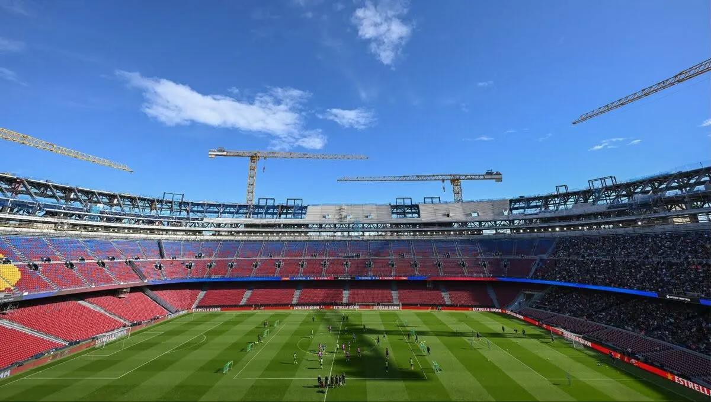

Camp Nou to jeden z najbardziej znanych stadionów piłkarskich na świecie. Znajduje się on w Barcelonie i jest domem klubu FC Barcelona. Stadion od lat stanowi ważny symbol miasta oraz całej Katalonii. Został otwarty w 1957 roku. Od tego czasu stał się miejscem wielu historycznych wydarzeń sportowych. Jego nazwa oznacza „nowe boisko” w języku katalońskim. Nazwa ta nawiązuje do momentu jego budowy i zastąpienia wcześniejszego stadionu. Camp Nou przez wiele lat był największym stadionem w Europie. Jest również jednym z największych stadionów piłkarskich na świecie. Może pomieścić ponad 90 tysięcy kibiców. Atmosfera podczas meczów jest tam wyjątkowo głośna i emocjonująca. Kibice FC Barcelony nazywani są „culés”. Słyną oni z ogromnego przywiązania do klubu Na Camp Nou grali najwięksi piłkarze w historii futbolu. Występowali tam między innymi Lionel Messi, Xavi i Iniesta, a także Robert Lewandowski. Camp Nou pozostaje jednym z najważniejszych stadionów w historii piłki nożnej.